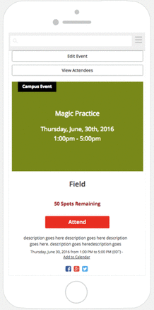
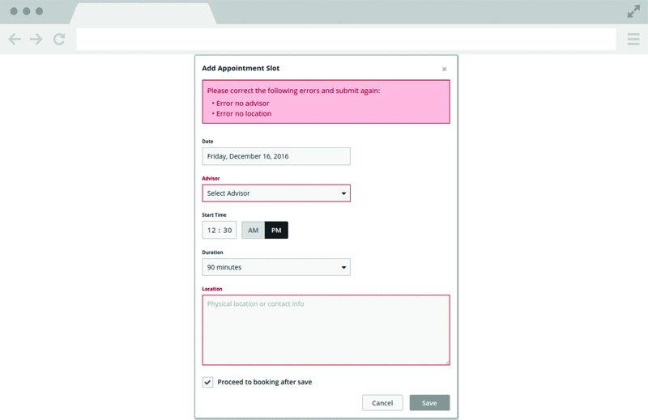
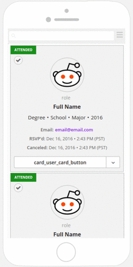

Tenlegs expertise in building and maintaining online network platforms for students, career services and more. My role was to build and update responsive front-end with Ember.js framework using JavaScript to implement custom behavior. These are some examples of my work.
With Handlebars templates, I helped creating components for organizing events within school communities, adding appointment slots for academic advisors, and building user management cards.

The Add Appointment Slot component uses a form template and features dropdown calendar and error validation with flash messages. The duration dropdown lets you set the appointment end time that's automatically calculated with Ember.computed function behind the scenes.

The User Management Card component is being reused to make up a list. The responsive design of the cards is shown on the mobile template.

I also participated in creating models and routes for current projects. To see some samples of my code, contact me.